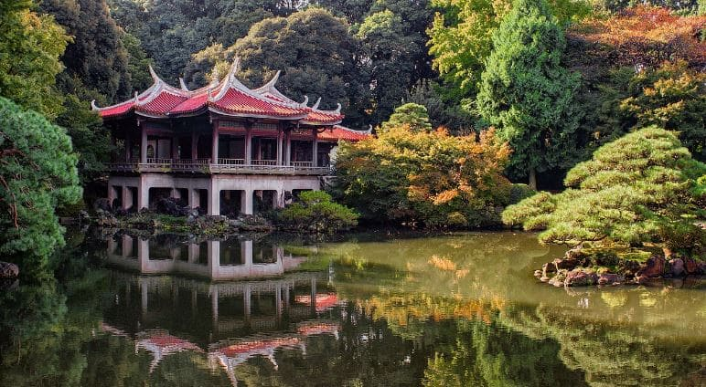
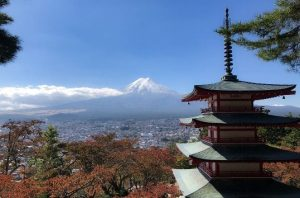
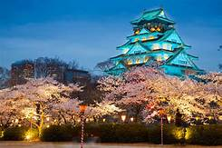

Japan nearest mainland neighbors are the Siberian region of Russia in the north, and Korea and farther south. Almost four-fifths of Japan is covered with mountains..
 There is a reason that Japan famous parks are admired by all kinds of travelers. Photographers, gardeners, or simply those with an eye for natural beauty are often left stunned by many if not all of Japan koens (parks). The first kōen was established in 1873 and since, the list of national parks in Japan has increased to 34 with almost 60 quasi-national parks, as well.
 Mount Fuji is a symbolic icon of Japan and has been for centuries. It is integrated deeply into Japanese culture and belief, and many choose to visit Mt Fuji in order to be blessed with fortune. Natural features such as mountains, lakes, and trees are places of spirit called kam.Mount Fuji, highest mountain in Japan. It rises to 12,388 feet (3,776 meters) near the Pacific coast of central Honshu, about 60 miles (100 km) west of the Tokyo-Yokohama metropolitan area.. It is a volcano that has been dormant since its last eruption (1707) but is still generally classified as active by geologists.
 OSAKAs is the third largest city in Japan, with a population of over 2.5 million people in its greater metropolitan area. It is the central metropolis of the Kansai region and the largest of the Osaka-Kobe-Kyoto. The city of Osaka has its beginnings far in the past. The first signs of human life and habitation in the area around Osaka were buried skeletons that are dated back to the 5-6th century before Christ. During the Yayoi period, the city experienced an increase of population as the rice farming grew and the port became a greater point of trade.